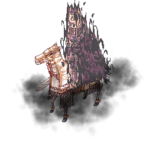
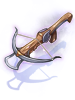
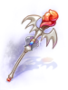

Glast Heim Challenge Mode (Español)
WIP
| Requisitos | |
|---|---|
| Nivel Base: | 170 |
| Lugar de Inicio: | Glast Heim (glast_01 143/288) |
| Prerequisito(s): | Haber finalizado Old Glast Heim (Hard) |
| Recompensas | |
| Experiencia: | - |
| Items: | Depende del nivel de dificultad |
Resumen
Glast Heim Challenge Mode es una instancia con dificultad progresiva y seleccionable, de la que dependen las recompensas entregadas.
Se inicia en el nivel 1, el cual deberá ser finalizado una cantidad determinada de veces para poder desbloquear el segundo nivel y así sucesivamente con los demás niveles, hasta llegar al nivel máximo de dificultad, que es el nivel 10.
La dificultad y las mecánicas de batalla presentes en la instancia dependerán del nivel que se seleccione, así como también el daño que inflige la mob dentro de la instancia y el HP de los Boss.
Los requisitos para poder ingresar son ser nivel base 170+ y haber finalizado al menos 1 vez Old Glast Heim (Hard).
Tiene un cooldown de 3 días.
Nivel de Dificultad
Para avanzar en niveles de dificultad, se necesita finalizar la instancia múltiples veces.
| Nivel de Dificultad | Clears necesarias | HP de Phantom Amdarias |
|---|---|---|
| Nivel 1 | Se inicia en Nivel 1. | 600,000,000 |
| Nivel 2 | 5 veces. | 750,000,000 |
| Nivel 3 | 11 veces. | 900,000,000 |
| Nivel 4 | 18 veces. | 1,050,000,000 |
| Nivel 5 | 26 veces. | 1,200,000,000 |
| Nivel 6 | 35 veces. | 1,350,000,000 |
| Nivel 7 | 45 veces. | 1,500,000,000 |
| Nivel 8 | 60 veces. | 1,650,000,000 |
| Nivel 9 | 80 veces. | 1,800,000,000 |
| Nivel 10 | 100 veces. | 2,000,000,000 |
Conforme avance el nivel de dificultad, notarás varios cambios durante la instancia.
Estos son:
- Aumenta el daño que la mob realiza (El daño se multiplica por el nivel de dificultad en el que te encuentres).
- Aumenta el HP de los Boss.
- Aumenta el HP de los Mutated Thorns
- Aumenta la mecánica de regeneración de HP por segundo del Boss
- Aparición de nuevas mecánicas y skills durante la batalla contra el Boss.
- Aumento de las recompensas.
Mob
| Imagen | Nombre | Nivel | HP | Tamaño / Raza / Elemento |
|---|---|---|---|---|
|  | Mutated White Knight | 188 | 2,450,483 | Large / Undead / Dark 3 |

|
Mutated Khalitzburg | 185 | 2,401,358 | Medium / Undead / Dark 3 |
| Mutated Raydric | 182 | 2,362,114 | Medium / Demihuman / Dark 2 | |
| Mutated Raydric Archer | 186 | 2,394,654 | Medium / Demon / Dark 2 | |
| Prime Corruption Root | 190 | 5,000,000 | Large / Demon / Earth 3 | |

|
Mutated Thorn | 185 | 10 | Small / Demon / Ghost 4 |

|
Phantom Amdarais | 192 | (450,000,000 + [150,000,000 * Nivel de Dificultad]) | Large / Demon / Dark 3 |

|
Phantom Himmelmez | 195 | (450,000,000 + [150,000,000 * Nivel de Dificultad]) | Medium / Angel / Holy 3 |
Skills y Mecánicas
Nivel 1 en adelante
- El Boss recibirá 1 de daño de cualquier tipo de ataque si algún miembro de la party se desconecta, muere o entra tarde a la instancia.
- Si el Boss abandona el área demarcada por los Mutated Thorns por mas de 30 segundos, la batalla se reiniciará.
- Si toda la party permanece muerta por mas de 5 minutos, el Boss desaparecerá y Oscar volverá a aparecer. Puedes volver a invocar el Boss al hablar con Oscar nuevamente.
- El boss permanentemente se regenerará de forma pasiva una gran cantidad de HP cada 2 segundos.
- Los jugadores son arrastrados y transportados al azar dentro de la arena luego de que el Boss haya recibido una gran cantidad de daño.
- Siempre que el HP del boss se encuentre debajo del 90%, aparecerá un patrón cuadrado de Mutated Thorns, que tras 5 segundos después de aparecer, desaparecerán y castearán en su lugar Dark Grand Cross.
 X Firewall: Invoca Firewalls en un patrón con forma de 'X', dañando y haciendo retroceder a cualquiera que caiga en esta skill.
X Firewall: Invoca Firewalls en un patrón con forma de 'X', dañando y haciendo retroceder a cualquiera que caiga en esta skill. Ground Drive #1: Castea múltiples
Ground Drive #1: Castea múltiples  Heaven's Drive en un patrón con forma de '+'.
Heaven's Drive en un patrón con forma de '+'.- Ground Drive #2: Castea múltiples Heaven's Drive alrededor del boss, luego se expande en un patrón con forma de '+'.
 Immune Property: Durante 30 segundos, Phantom Amdarais se vuelve inmune hacia todo el daño del elemento al cual es débil, es decir, Holy.
Immune Property: Durante 30 segundos, Phantom Amdarais se vuelve inmune hacia todo el daño del elemento al cual es débil, es decir, Holy. Grand Darkness: El boss castea Grand Darkness, el cual es básicamente un
Grand Darkness: El boss castea Grand Darkness, el cual es básicamente un  Grand Cross de elemento Shadow.
Grand Cross de elemento Shadow. Rain of Meteors: El boss invoca meteoros alrededor suyo, infligiendo daño mágico de propiedad Fire en patrones con forma de 'X' o '+'.
Rain of Meteors: El boss invoca meteoros alrededor suyo, infligiendo daño mágico de propiedad Fire en patrones con forma de 'X' o '+'. Demonic Hell's Judgement: Daña a todos los jugadores que se encuentren dentro de un área de 13x13, infligiendo daño físico de propiedad Shadow y provocando un efecto de estado aleatorio.
Demonic Hell's Judgement: Daña a todos los jugadores que se encuentren dentro de un área de 13x13, infligiendo daño físico de propiedad Shadow y provocando un efecto de estado aleatorio. Ganbantein Lv 9: Elimina instantáneamente todas las skills de piso en un área de 9x9 alrededor del boss.
Ganbantein Lv 9: Elimina instantáneamente todas las skills de piso en un área de 9x9 alrededor del boss. Reflect Shield: Refleja una porción del daño físico melee recibido hacia el atacante.
Reflect Shield: Refleja una porción del daño físico melee recibido hacia el atacante. Pneuma: Al recibir daño físico de rango, el boss castea Pneuma encima de el para denegar el daño de rango.
Pneuma: Al recibir daño físico de rango, el boss castea Pneuma encima de el para denegar el daño de rango.- El boss invoca mob tras alcanzar ciertos umbrales de HP:
- Cuando se encuentra bajo el 70% de HP, invoca Mutated Khalitzburg.
- Cuando se encuentra bajo el 50% de HP, invoca Mutated White Knight.
- Cuando se encuentra bajo el 30% de HP, invoca Mutated Raydric Archer.
Nivel 3 en adelante
 Max Pain: Se activa de forma aleatoria e instantánea cuando el boss se encuentra bajo el 70% de HP. Refleja el daño recibido hacia toda la party durante 10 segundos.
Max Pain: Se activa de forma aleatoria e instantánea cuando el boss se encuentra bajo el 70% de HP. Refleja el daño recibido hacia toda la party durante 10 segundos.- Un Reaper Yanku invulnerable puede aparecer aleatoriamente y comenzará a acercarse lentamente hacia el boss. Si ambos se encuentran, la regeneración de HP pasiva del boss disminuirá, pero su ataque incrementará. Esto puede acumularse indefinidamente.
Nivel 9 en adelante
 Gradual Gravity: Aplica un debuff que realiza daño sobre el tiempo, el cual depende de tu HP máximo.
Gradual Gravity: Aplica un debuff que realiza daño sobre el tiempo, el cual depende de tu HP máximo.
Nivel 10
- Un círculo azul aparecerá aleatoriamente durante la pelea. El Boss debe ser atraído hacia el círculo dentro de 1 minuto. Si no logran atraerlo dentro del tiempo establecido, entrará en estado de "Rage" y amplificará su daño.
Diferencias de Himmelmez
Himmelmez comparte todas las mecánicas con Phantom Amdarais, pero con unas pequeñas variaciones:
- Immune Property: Durante 30 segundos, Himmelmez se vuelve inmune hacia todo el daño del elemento al cual es débil, es decir, Shadow.
- Grand Cross: En vez de Grand Darkness, Himmelmez castea Grand Cross.
Recompensas
Tras completar la instancia, aparecerá un Treasure Chest frente a la party. La cantidad y variedad de las recompensas escala con el nivel de dificultad.
| Recompensa | Nivel de Dificultad | |||||||||
|---|---|---|---|---|---|---|---|---|---|---|
| Lv 1 | Lv 2 | Lv 3 | Lv 4 | Lv 5 | Lv 6 | Lv 7 | Lv 8 | Lv 9 | Lv 10 | |
 Sealed Temporal Circlet Sealed Temporal Circlet
|
1~5 | 1~6 | 2~7 | 2~8 | 3~9 | 3~10 | 4~10 | 4~10 | 5~10 | 5~10 |
 Temporal Gemstone Temporal Gemstone
|
0 | 0 | 1~3 | 1~4 | 1~4 | 1~5 | 2~5 | 2~6 | 2~6 | 2~7 |
| Temporal Spell | 0 | 0 | 0 | 0 | 1~3 | 3~7 | 5~11 | 8~16 | 11~22 | 14~28 |
 Temporal Fragment Temporal Fragment
|
1~15 | 1~20 | 1~25 | 1~30 | 2~30 | 2~30 | 3~30 | 3~30 | 4~30 | 4~30 |
Adicionalmente, cada jugador recibe mas Sealed Temporal Circlets al hablar con Oscar. Completar uno de los siguientes retos significará una Sealed Temporal Circlet adicional:
- Derrotar MVP.
- Derrotar todos los Prime Corruption Roots antes de que desaparezcan.
- Derrotar al MVP sin que éste entre en Rage o sin que la pelea se reinicie.
Intercambio de Items
| Item | Costo | NPC |
|---|---|---|
| Temporal Circlet (a elección) |
5 Sealed Temporal Circlet
|
 HUGINN2001 |
| Conversión de Sealed Circlets | 1 Sealed Temporal Circlet
| |
 Mutated White Knight Card Mutated White Knight Card
|
50 Temporal Spell | |
 Mutated Khalitzburg Card Mutated Khalitzburg Card
|
70 Temporal Spell |  MUNNIN2003 |
| Royal Guardian Weapons (aleatorio) |
20 Temporal Fragment
| |
| Royal Guardian Weapons (a elección) |
10 Temporal Spell |
Conversión de Sealed Circlets
Al intercambiar 1 Sealed Temporal Circlet puedes recibir los siguientes items:
- Temporal Fragment Común
- Temporal Gemstone Raro
- Temporal Spell Muy Raro
Royal Guardian Weapons
| Image | Name | Description |
|---|---|---|

|
Guardian Knight Claymore [2] |
Atk + 5%.
When equipped with King Schmidt's Suit and King Schmidt's Manteau, Atk + 30, has a chance to gain bonus critical damage by 20% for 10 seconds when dealing physical damage.
|

|
Guardian Knight Spear [2] |
Increases long ranged physical damage by 1% per refine rate.
When equipped with King Schmidt's Suit and King Schmidt's Manteau, Atk + 30, has a chance to gain bonus long ranged physical damage by 10% for 10 seconds when dealing physical damage.
|
| Guardian Knight Jewel Sword [2] |
Matk + 180.
When equipped with King Schmidt's Suit and King Schmidt's Manteau, has a chance to gain Atk + 7% and Matk + 7% for 10 seconds when dealing physical or magical damage.
| |
| Guardian Knight Axe [2] |
Can't be destroyed
When equipped with King Schmidt's Suit and King Schmidt's Manteau, Atk + 30, has a chance to gain bonus long ranged physical damage by 10% for 10 seconds when dealing physical damage.
Class : Axe
| |
| Guardian Knight Battle Axe [2] |
Atk + 5%
When equipped with King Schmidt's Suit and King Schmidt's Manteau, Atk + 30, has a chance to gain bonus long ranged physical damage by 10% for 10 seconds when dealing physical damage.
| |
| Royal Gladius (R) [2] |
Atk + 5%.
When equipped with King Schmidt's Suit and King Schmidt's Manteau, Atk + 30, has a chance to gain bonus Atk + 10% for 10 seconds when dealing physical damage.
| |
| Royal Gladius (L)[3] |
Has no effect. Used for combo with Royal Gladius (R).
| |

|
Royal Katar [2] |
Atk + 5%.
When equipped with King Schmidt's Suit and King Schmidt's Manteau, Atk + 30, has a chance to gain bonus long ranged physical damage by 20% for 10 seconds when dealing physical damage.
|

|
Royal Magician Dagger [2] |
Matk + 170
When equipped with King Schmidt's Suit and King Schmidt's Manteau, Matk + 30, has a chance to gain bonus fire and neutral property magical damage by 10% for 10 seconds when dealing magical damage.
|

|
Royal Cleric Staff [2] |
Can't be destroyed
When equipped with King Schmidt's Suit and King Schmidt's Manteau, Matk + 30, has a chance to gain bonus holy property magical damage by 10% for 10 seconds when dealing magical damage.
Class : Staff
|

|
Royal Magician Staff [2] |
Can't be destroyed
When equipped with King Schmidt's Suit and King Schmidt's Manteau, Matk + 30, has a chance to gain bonus wind and earth property magical damage by 10% for 10 seconds when dealing magical damage.
Class : Two-handed Staff
|
|  | Guardian Knight Bow [2] |
Increases long ranged physical damage by 15%
When equipped with King Schmidt's Suit and King Schmidt's Manteau, Atk + 30, has a chance to gain bonus long ranged physical damage by 10% for 10 seconds when dealing physical damage.
|
|  | Royal Magician Wand [2] |
Can't be destroyed
When equipped with King Schmidt's Suit and King Schmidt's Manteau, Matk + 30, has a chance to gain bonus fire and shadow property magical damage by 10% for 10 seconds when dealing magical damage.
Class : Staff
|
| Royal Sage Book [2] |
Can't be destroyed
When equipped with King Schmidt's Suit and King Schmidt's Manteau, Matk + 30, has a chance to gain bonus water and wind property magical damage by 10% for 10 seconds when dealing magical damage.
Class : Book
| |

|
Royal Cello [2] |
Can't be destroyed
When equipped with King Schmidt's Suit and King Schmidt's Manteau, Matk + 30, has a chance to gain bonus neutral property magical damage by 10% for 10 seconds when dealing magical damage.
Class : Instrument
|

|
Royal Whip [2] |
Can't be destroyed
When equipped with King Schmidt's Suit and King Schmidt's Manteau, Matk + 30, has a chance to gain bonus neutral property magical damage by 10% for 10 seconds when dealing magical damage.
Class : Whip
|

|
Royal Pillar [2] |
Can't be destroyed
When equipped with King Schmidt's Suit and King Schmidt's Manteau, Atk + 30, has a chance to gain bonus long ranged physical damage by 10% for 10 seconds when dealing physical damage.
Class : Mace
|

|
Royal Syringe [2] |
Can't be destroyed
When equipped with King Schmidt's Suit and King Schmidt's Manteau, Atk + 30, has a chance to gain bonus long ranged physical damage by 10% for 10 seconds when dealing physical damage.
Class : Mace
|

|
Royal Alchemy Staff [2] |
Can't be destroyed
When equipped with King Schmidt's Suit and King Schmidt's Manteau, Atk + 30, has a chance to gain bonus long ranged physical damage by 10% for 10 seconds when dealing physical damage.
|
| Royal Knight Archer Bow [2] |
Increases long ranged physical damage by 15%
When equipped with King Schmidt's Suit and King Schmidt's Manteau, Atk + 30, has a chance to gain bonus long ranged physical damage by 10% for 10 seconds when dealing physical damage.
| |
| Royal Knuckle [2] |
Increases long ranged physical damage by 15%
When equipped with King Schmidt's Suit and King Schmidt's Manteau, Atk + 30, has a chance to gain bonus long ranged physical damage by 10% for 10 seconds when dealing physical damage.
| |
| Royal Revolver [2] |
Increases long ranged physical damage by 15%
When equipped with King Schmidt's Suit and King Schmidt's Manteau, Atk + 30, has a chance to gain bonus long ranged physical damage by 10% for 10 seconds when dealing physical damage.
| |

|
Royal Huuma Shuriken [2] |
Increases long ranged physical damage by 15%
When equipped with King Schmidt's Suit and King Schmidt's Manteau, Atk + 30, has a chance to gain bonus long ranged physical damage by 10% for 10 seconds when dealing physical damage.
|

|
Royal Foxtail [2] |
Can't be destroyed
When equipped with King Schmidt's Suit and King Schmidt's Manteau, Atk + 30, Matk + 30, has a chance to gain bonus long ranged physical damage by 10% for 10 seconds when dealing physical damage, has a chance to gain bonus Matk + 10% for 10 seconds when dealing magical damage.
|
Temporal Circlets
| Image | Name | Description |
|---|---|---|
| Temporal Circlet (Rune Knight) [1] |
MaxHP + 250 per 2 refine rate.
| |

|
Temporal Circlet (Royal Guard) [1] |
Atk + 15 per 2 refine rate.
|

|
Temporal Circlet (Mechanic) [1] |
Atk + 15 per 2 refine rate.
|

|
Temporal Circlet (Genetic) [1] |
Atk + 15 per 2 refine rate.
|

|
Temporal Circlet (Guillotine Cross) [1] |
Atk + 15 per 2 refine rate.
|

|
Temporal Circlet (Shadow Chaser) [1] |
Atk + 15 per 2 refine rate.
|

|
Temporal Circlet (Archbishop) [1] |
Matk + 15 per 2 refine rate.
|

|
Temporal Circlet (Sura) [1] |
Atk + 15 per 2 refine rate.
|

|
Temporal Circlet (Warlock) [1] |
Matk + 15 per 2 refine rate.
|
| Temporal Circlet (Sorcerer) [1] |
Matk + 15 per 2 refine rate.
| |
| Temporal Circlet (Ranger) [1] |
Atk + 15 per 2 refine rate.
| |
| Temporal Circlet (Wanderer & Minstrel) [1] |
Matk + 15 per 2 refine rate.
| |

|
Temporal Circlet (Star Emperor) [1] |
Atk + 15 per 2 refine rate.
|
| Temporal Circlet (Soul Reaper) [1] |
Matk + 15 per 2 refine rate.
| |

|
Temporal Circlet (Rebellion) [1] |
Atk + 15 per 2 refine rate.
|
| Temporal Circlet (Oboro) [1] |
Matk + 15 per 2 refine rate.
| |

|
Temporal Circlet (Kagerou) [1] |
Atk + 15 per 2 refine rate.
|
| Temporal Circlet (Super Novice)[1] |
Atk + 10 and Matk + 10 per 2 refine rate.
| |
| Temporal Circlet (Summoner) [1] |
Atk + 15 per 2 refine rate.
|
Temporal Circlets Enchantment

Talk to OSC0005 to start the enchanting process.


Special Enchants
Special enchants can receive incremental level upgrades, similar to the Tomb of the Fallen enchant upgrade process.
Every upgrade attempt has a chance of failure. Failing on the first upgrade will only consume the materials, while failing at Level 2 or above will also downgrade the enchant by 1 level.
There is no chance of breaking the headgear.
| Level Upgrade | Amount of Temporal Spell required |
|---|---|
| Lv1 -> Lv2 | 4 |
| Lv2 -> Lv3 | 6 |
| Lv3 -> Lv4 | 8 |
| Lv4 -> Lv5 | 10 |
| Lv5 -> Lv6 | 12 |
| Lv6 -> Lv7 | 16 |
| Lv7 -> Lv8 | 20 |
| Lv8 -> Lv9 | 28 |
| Lv9 -> Lv10 | 40 |
When first obtaining one of the 7 special enchants, you will be able to either keep said enchant or re-roll up to five times, with no added charge, until you leave the NPC. The enchant pool remains the same for the re-rolls.
Enchantment Reset
You can reset all enchants on a given headgear by using one of the two options:
- 500,000 zeny - 70% success. The headgear is destroyed on failure.
- 2 Temporal Gemstone and 2 Sealed Temporal Circlet - 100% success.
Enchantment Re-roll
This is a custom feature allowing you to reset a specific enchant for your headgear at a higher price.
| Re-roll | First Enchant | Second Enchant (Normal) | Second Enchant (Special) |
|---|---|---|---|
| Material required | 50 Temporal Fragment 300,000 zeny |
100 Temporal Fragment 300,000 zeny |
6 Temporal Gemstone 500,000 zeny |